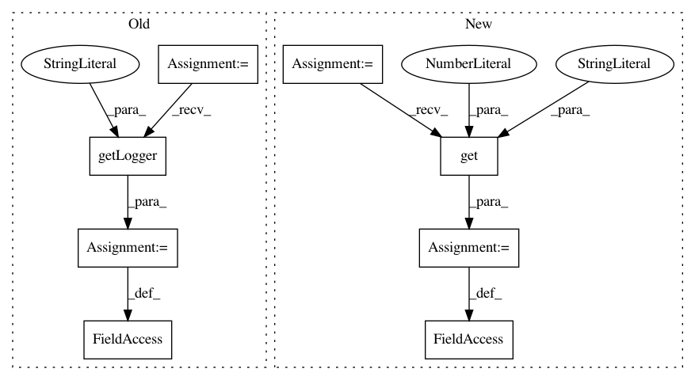

6aad1de658a933d3fa376f7fe9abf419da8a8bd2,python/baseline/dy/lm/train.py,LanguageModelTrainerDynet,__init__,#LanguageModelTrainerDynet#Any#,13
Before Change
self.model = model
self.optimizer = OptimizerManager(model, **kwargs)
self.valid_epochs = 0
self.log = logging.getLogger("baseline.timing")
@staticmethod
def _loss(outputs, labels):
losses = [dy.pickneglogsoftmax_batch(out, label) for out, label in zip(outputs, labels)]
After Change
super(LanguageModelTrainerDynet, self).__init__()
self.model = model
self.optimizer = OptimizerManager(model, **kwargs)
self.nsteps = kwargs.get("nsteps", 500)
@staticmethod
def _loss(outputs, labels):
losses = [dy.pickneglogsoftmax_batch(out, label) for out, label in zip(outputs, labels)]
In pattern: SUPERPATTERN
Frequency: 4
Non-data size: 8
Instances
Project Name: dpressel/mead-baseline
Commit Name: 6aad1de658a933d3fa376f7fe9abf419da8a8bd2
Time: 2018-11-26
Author: blester125@users.noreply.github.com
File Name: python/baseline/dy/lm/train.py
Class Name: LanguageModelTrainerDynet
Method Name: __init__
Project Name: dpressel/mead-baseline
Commit Name: 6aad1de658a933d3fa376f7fe9abf419da8a8bd2
Time: 2018-11-26
Author: blester125@users.noreply.github.com
File Name: python/baseline/dy/seq2seq/train.py
Class Name: Seq2SeqTrainerDynet
Method Name: __init__
Project Name: dpressel/mead-baseline
Commit Name: 6aad1de658a933d3fa376f7fe9abf419da8a8bd2
Time: 2018-11-26
Author: blester125@users.noreply.github.com
File Name: python/baseline/tf/lm/train.py
Class Name: LanguageModelTrainerTf
Method Name: __init__
Project Name: dpressel/mead-baseline
Commit Name: 6aad1de658a933d3fa376f7fe9abf419da8a8bd2
Time: 2018-11-26
Author: blester125@users.noreply.github.com
File Name: python/baseline/tf/seq2seq/train.py
Class Name: Seq2SeqTrainerTf
Method Name: __init__